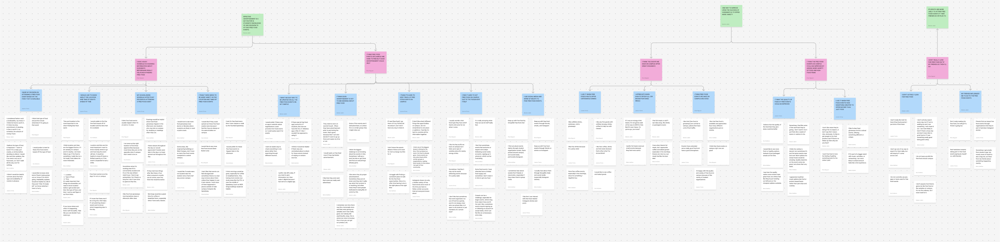
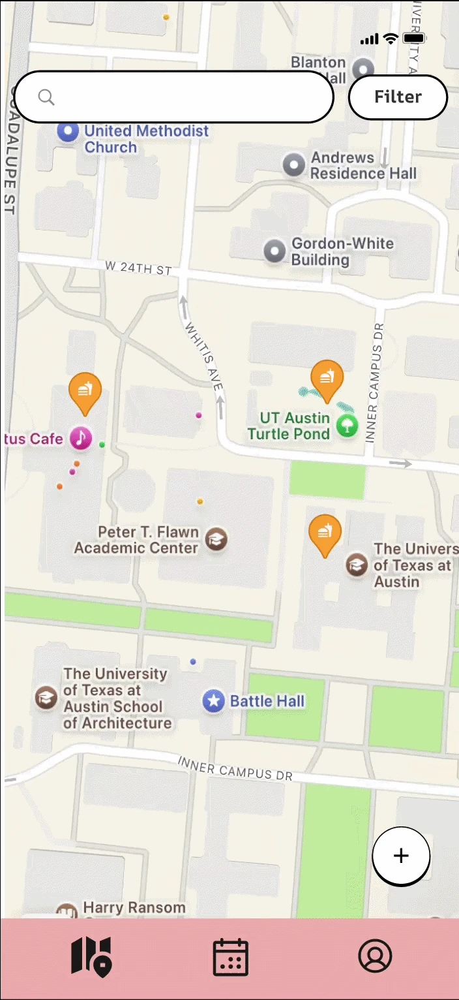
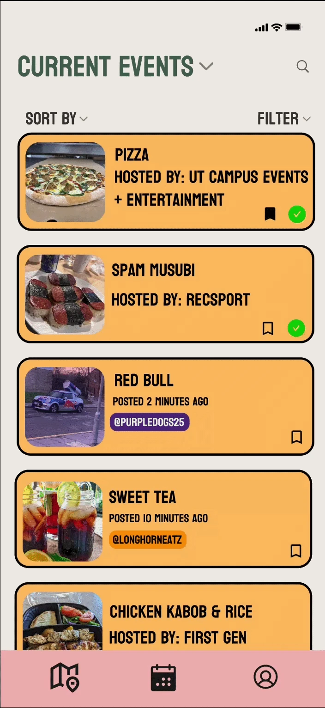
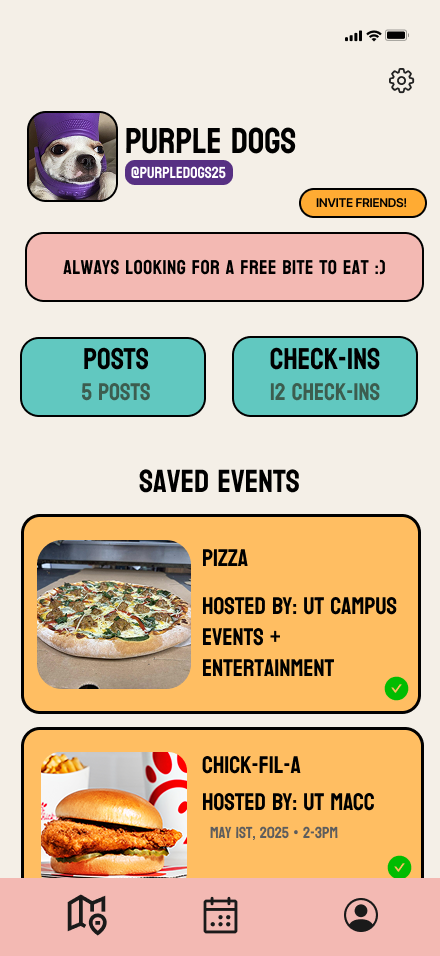

case study

Campus App
MunchMap
stay in the know
- Role
- co-UX designer
- Timeline
- January – May 2025
context
As part of a class project in Introduction to User Experience Design, I served as a co-designer on a team of five, taking a student pain point from research all the way through to a high fidelity prototype. Unlike my other projects, MunchMap gave me the opportunity to ground every design decision in real user research, conducting interviews, building an affinity diagram, and iterating based on peer feedback before a single high fidelity screen was made.
the problem
On a campus as large and fast-paced as UT Austin, students regularly miss free food giveaways happening nearby. The closest existing solution, a UT Free Food GroupMe, had hit its member cap and was riddled with bots, making time-sensitive information nearly impossible to find. There was no centralized, real-time way for students to discover what was available, where it was, and whether it was still there.
class Introduction to UX Design
How might we create a reliable, centralized way for students to find real-time free food events on campus?
secondary research · Mariam & Ava
While GroupMe has a UT Free Food group chat, it has a cap of 5000 members and was frequently spammed by bots. This led to obstructing access to information about free food pop-ups. Additionally, the nature of the group chat made it difficult to consolidate all the free food options, along with their locations, in one view, especially since those freebies can run out without students knowing. Companies love to target college students as they want to build loyalty, but it's difficult for students to make the most of those opportunities when there’s no one resource to stay updated (Byquist, 2017).
Maya Wong wrote an article discussing how Northwestern students who use GroupMe are encountering unwanted members and messages in their student GroupMe chats. In this article, it was said that these problems were happening because of how many people were in these GroupMe chats. This problem causes a lot of frustration among students and makes GroupMe not a viable option for communication. It also does not allow for most of the student population to join these groups (Wong, 2024).
Bryan Ellis discusses how the best marketing strategy for college students is digital marketing and for brands to utilize their social media. There are few times when brands who come on campus to give away free items are able to reach the students digitally. Therefore, a majority of the students miss out on the opportunity (Ellis, 2023).
research
100+ notes, 3 key insights
Before designing anything, our team conducted six user interviews with UT students to understand how they currently found free food on campus, what frustrated them, and what would make them more likely to engage with giveaway events.
After transcribing our interviews, we compiled over 100 notes into a FigJam affinity diagram, grouping them into 16 categories, then 5 themes, and finally 3 key insights that shaped every feature decision we made.

vision & priorities
A live map, not a group chat
MunchMap is a real-time campus app that helps UT Austin students never miss a free food event.
Rather than relying on scattered group chats or word of mouth, students can view a live map of current and upcoming giveaways, filter by dietary preference, verify events through live photo uploads, and invite friends to join them.
Every feature was designed to reduce friction and increase confidence, so students always know what is available, where it is, and whether it is worth the trip.
peer feedback & scope decisions
Sharing the prototype with peers surfaced questions we had not fully resolved. We scoped MunchMap to UT students only, since the app was built around UT's campus and giveaway culture. We added in-the-moment photo verification, so students confirm a drop is real by photographing it on the spot rather than uploading from their camera roll, and location tracking to prevent duplicate postings and keep event status accurate. And after weighing feedback on our rewards system, which felt unclear and out of scope for our timeline, we cut it in favor of a simpler "Snagged It" flow, where students confirm they grabbed food and can optionally photograph it once the estimated time to arrival has passed.
screens
Wayfinding with zero learning curve
Designed the bottom navigation bar using universal symbols, a map icon, a calendar icon, and a profile icon, to keep wayfinding intuitive and consistent across all screens.
The goal was zero learning curve so students could move through the app naturally without having to think about where they were.



takeaways
Research reframes the problem
I learned that research does not just inform design, it changes what you think the problem even is. Before our interviews, we assumed the main issue was awareness. After diagramming over 100 notes, we realized the problem was more layered: it was about trust, social motivation, and dietary inclusion just as much as it was about information access.
I also learned how to iterate based on feedback. When peer reviewers flagged confusion around our original rewards system, we made the difficult decision to cut it rather than complicate the prototype.
Tools